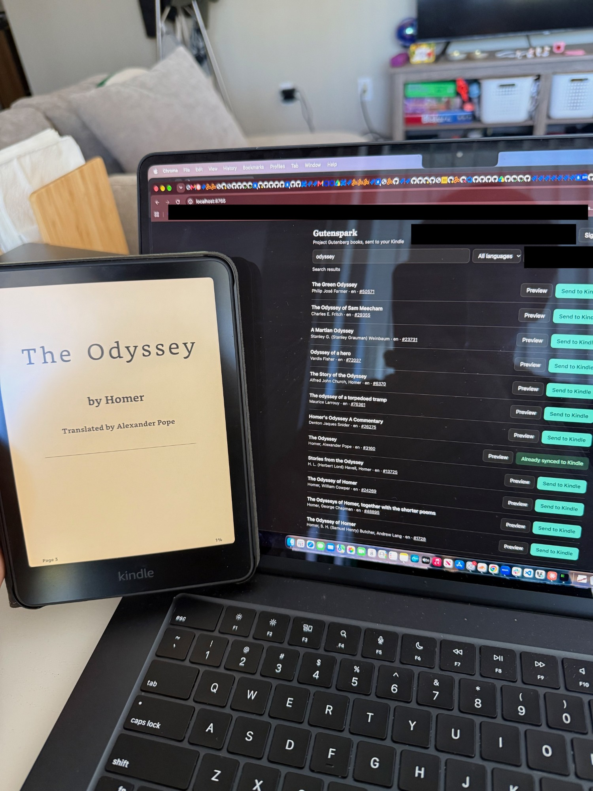

Gutenspark is meant to be a home digital library that integrates with a variety of ebooks to send directly to your Kindle. The first integration is Project Gutenberg.
Normally, if you wanted to read an ebook from Project Gutenberg, you would need to download the ebook file and manually upload it through Amazon's "Send to Kindle" page.
Instead, the app authorizes into your Amazon account that has your registered Kindle(s), and lets you pick and choose which ebook you want to read on your Kindle. Find your ebook, send it, sync your Kindle, and it's ready to read. It's currently only hosted at my home, and I don't really have plans to host it online, since the API to automatically send to your Kindle is honestly a bit janky and unsupported.